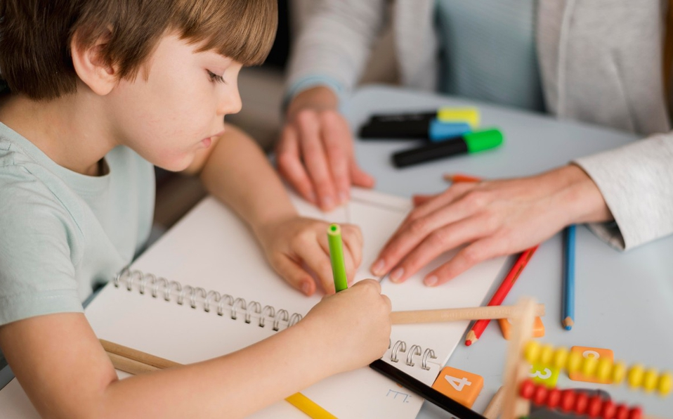

| Clase Parvulos | Clase Primarios | Clase Intermedios | Clase Pre-Juvenil |
|---|---|---|---|
| Niños de 3 a 5 años | Niños de 6 a 8 años | Niños de 9 a 11 años | Niños de 12 a 15 años |

Es la edad de la observación, de copiar a los demás. No quieren participar en la clase, prefieren la misma maestra y la misma aula cada semana. Nunca están quietos. Sol curiosos, llenos de preguntas, quieren saber como se llama cada cosa y como funciona.Es imaginativo, creativo, le gustan las historias y no se cansa cuando se le repite vez tras vez. Cree todo lo que le dicen, es confiado. Necesita amor de sus maestros. Su mundo es pequeño y cualquier cambio le trae inseguridad. Juega con amiguitos pero es muy egocéntrico y no comparte sus cosas con otros.
Su mundo es el juego, y, por ser inquieto necesita un horario lleno y completo de actividades dirigidas a su nivel de interés y habilidad. Tiene vocabulario limitado y no posee conceptos de tiempo y espacio. Necesita el afecto físico de sus maestros a través de caricias y abrazos. Debe aprender que Dios le ama, que Dios todo lo creó, que Dios desea nuestro amor.
El niño primario ya está en escuela y eso favorece su aprendizaje. Piensa concretamente pero le gusta lo imaginario. Distingue entre lo real y lo imaginario y memoriza muy bien. Vive en el presente no le interesa el pasado ni mucho el futuro. Le gusta el juego de palabras y números.
Características físicas: Sus músculos, pequeños no son bien coordinados y por eso los trabajos manuales no deben ser complicados ni detallados. Quiere participar en vez de mirar. Busca aprobación de los adultos. Es enérgico pero se cansa fácilmente.
Características Sociales: Le gusta las actividades sin competencia. Desea amistades pero ama más al adulto. Es todavía egoísta. Le gusta hablar. Quiere portarse como adulto.
Características Emocionales: Trata emocionalmente a personas y cosas. Es impaciente y tiene temores. Simpatiza con otros y se identifica con ellos. Puede resistir a demandas personales y desobedecer.
Características Espirituales: Le gusta mucho la escuela dominical , la gente, la iglesia. Tiene fe sencilla con Dios, ora extensamente sobre todas las cosas de su vida. Debe ya entender la historia de Cristo y la salvación en su sentido sencillo. Tiene curiosidad acerca de la muerte y del cielo. Desea ser bueno y ora para comportarse bien.
Ya lee bastante bien, piensa y razona más, Tiene buena memoria, es preguntón y desea aprender. Puede pensar con sentido cronológico. Le gusta leer y buscar textos bíblicos.
En lo físico es exageradamente fuerte y enérgico, tiene muy buena salud, es ruidoso y le gusta pelear. Ama la naturaleza, las plantas y animales, quiere descubrir aventuras por su cuenta.
En lo social, es muy competitivo en juego de habilidad. Es leal a sus amigos y les obedece más a ellos que a sus maestros o padres. No le gusta la autoridad, la resiste. Tiende a admirar a ciertos lideres o héroes de la televisión o el cine. No le gusta el sexo opuesto.
En lo emocional, el niño primario superior tiene pocos temores y no expresa ninguno. Puede ser de mal genio y enojoso. No le gustan demostraciones de afecto caricias y besos. Le gustan los chistes y el humor. Puede cubrir sus problemas con actitudes exageradas.
En lo espiritual, reconoce el pecado y pone normas altas para si. Tiene preguntas sobre el evangelio y puede hacer una entrega a Cristo, pero quizás esconda su deseo de hacerlo. Necesita ayuda y ánimo en su crecimiento espiritual. Son los años cuando se forman hábitos importantes de su vida personal y vida espiritual. Anímele a través de competencias con puntos por asistir, leer su Biblia, memorizar su texto, traer a los amigos, etc. Es admirable lo que un niño de esta edad hará para ganarse un premio o unos cuantos puntos.
Muchos están estudiando en la escuela básica y la palabra clave es «transición». Ni son adultos ni son niños. A veces se portan como adultos y a veces como niños.
Sus características fundamentalmente son:
* Son conscientes de la ropa, su arreglo personal , su apariencia.
* Son conscientes del sexo opuesto y buscan relacionarse con este.
* Son conscientes de dinero, lo que vale, lo que cuestan las cosas. Algunos trabajan.
* Tiene altos ideales , admiran ciertos personajes y desean ser como ellos.
* Tiene buena memoria para aprender textos y guardan muchas enseñanzas espirituales.
* Desean ser independientes pero muchas veces son fácilmente influenciados.
* Tiene un sentido social despierto. Se resienten con la injusticia..
* Dudan de lo que los adultos dicen, dudan de la Biblia y preguntan ¿por que? Están evaluando todos los principios que les han sido enseñados. Es tiempo de formar convicciones en ellos.
* Tienen más conocimiento que experiencias, piensan que lo saben todo pero…
* Su crecimiento físico está en su mejor época y están madurando como adultos.
* Hay problemas de ajustes hasta que se acostumbren a su nuevo cuerpo.
* Es importante poner los mejores maestros es la edad de intermedios.
* Es a esta edad en que un 85 % deja la escuela dominical y la iglesia.
* Debe haber enseñanza bíblica a su nivel de interés y problemas para que en lugar de dejar la iglesia se afirmen en ella.
* El maestro debe comprenderlos, amarlos, interesarse en ellos y escucharlos.
* El maestro debe probar con su ejemplo y la Palabra que Jesús es el Hijo de Dios y que podemos confiar en la Biblia como libro inspirado por Dios.
«El maestro debe hacer interesante su clase, nunca aburrida y monótona.»
- lección: Los Libros de la Biblia
- Lección: Los Jueces de la Biblia
- Lección: Cartas del Nuevo Testamento
- Lección: Las Parábolas
- Lección: Los Milagros de Jesús
- Lección: Los Diez mandamientos
- Lección: Fechas importantes
- Lección: La Salvación
- Lección: Los niños de la Biblia
- lección: Comenzando un nuevo año
- Lección: Vacaciones Divertidas
- Lección: Jesus mi mejor Amigo
- Lección: Los Discipulos de Jesús
- Lección: La extraordinaria vida de Pablo
- Lección: Corazón Misionero
- Lección: Mis deberes y responsabilidades
- Lección: La amistad
- Lección: Mes de la Biblia
- Lección: Los profetas menores
- Lección: La Creación